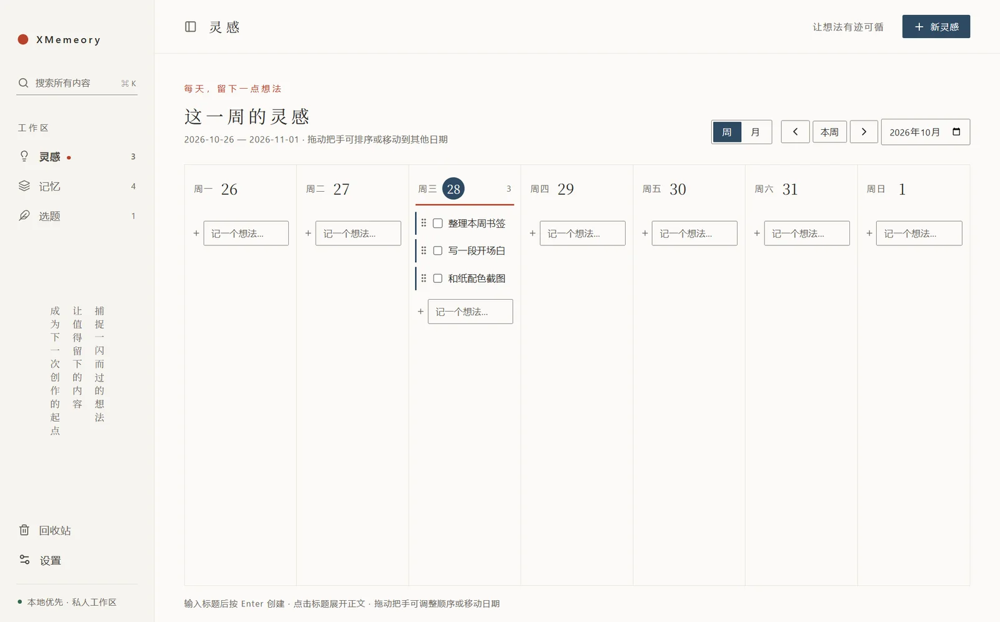
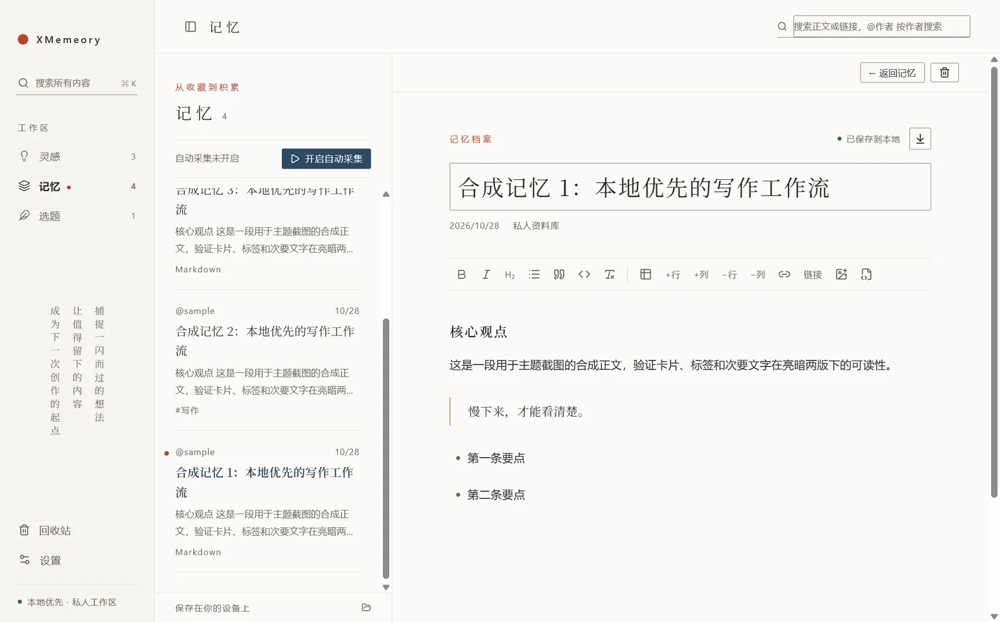
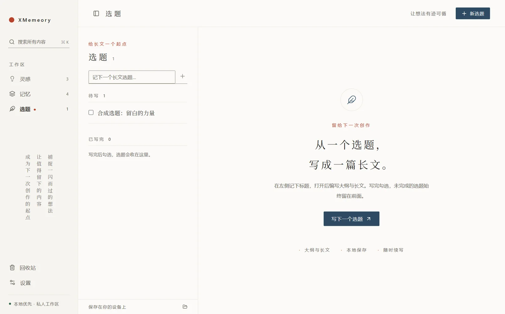
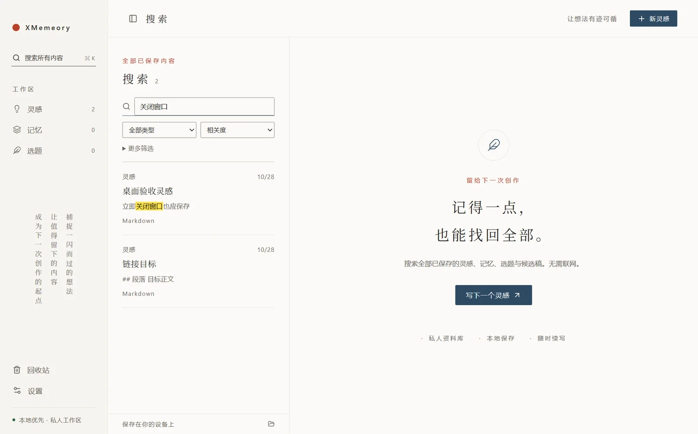
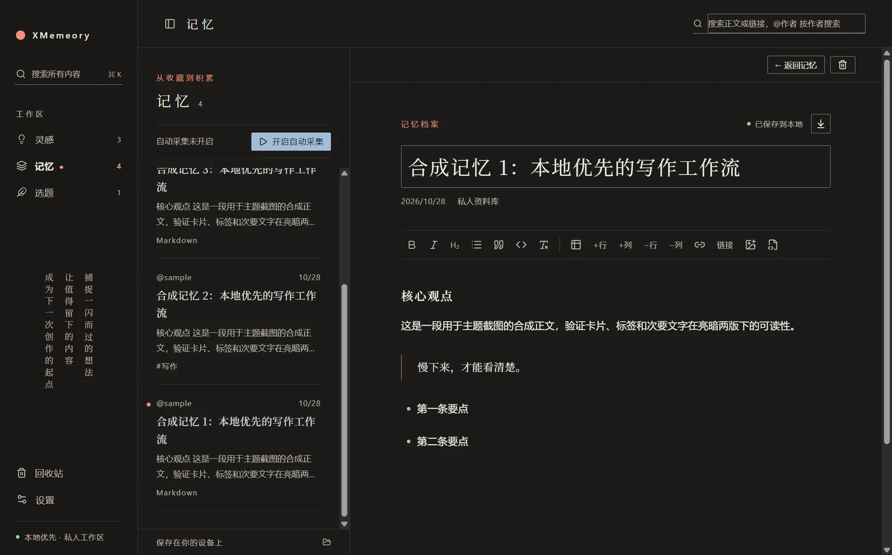

每天留下一点想法
周/月日历，输入标题按 Enter 就记下。一条灵感就是一条待办，用过就勾选划线，可拖动排序或移到其他日期。
Windows 桌面应用 · 本地优先 · v0.6.0
灵感散落在备忘录，收藏沉睡在书签栏，选题停在脑海里。XMemory 把三者放进同一个安静的写作空间：按日记灵感，自动沉淀 X 书签，再把一个想法写成完整的文章。

01 / 工作区
灵感按日记录，记忆自动沉淀，选题展开成文。全局搜索和双向链接把它们连在一起，想写的时候素材就在手边。
周/月日历，输入标题按 Enter 就记下。一条灵感就是一条待办，用过就勾选划线，可拖动排序或移到其他日期。
X 书签每小时增量采集，保留正文、原文链接、原图和长文结构，沉淀成按发布时间排列、可检索的资料库。
在同一篇文档里写大纲和正文。写完勾选划线，未完成的始终排在前面，随时续写或撤销完成。

02 / 书签采集
开启自动采集后，XMemory 每小时增量抓取一次 X 书签，已采集的自动跳过。长文保留标题、列表、引用、代码块和原位配图，短链接还原为真实地址。
03 / 长文选题
每个选题是一条待办，点开就能写。所见即所得的 Markdown 编辑器，富文本与源码一键切换。

04 / 搜索与主题
全局搜索覆盖灵感、记忆、选题和候选稿，命中关键词黄色高亮，点击结果直接定位到正文。和纸主题提供亮、暗两版，正文与标题使用随应用打包的思源宋体。


05 / 数据与隐私
06 / 安装
支持 Windows 10/11 x64。X 书签采集需要本机安装正式版 Google Chrome；不用采集也可以单独记录灵感和写作。
.exe，或免安装版 .zip。